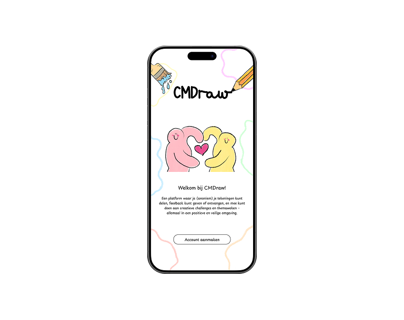
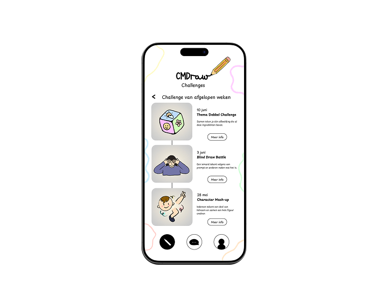

CMDraw - an app for CMD students who love drawing
Design (Figma)
View prototype ↗About this project
For the individual project - Included, I designed an interactive app that connects CMD students who share a passion for drawing. The challenge was to create a concept that strengthens the CMD community by making an underrepresented or invisible sub-community more visible.
My solution is a creative challenge app where drawing enthusiasts can participate in prompts, share their work, and support each other. The concept combines both online and offline interaction: the app connects users digitally, while physical challenge boards and campus meeting spots help bring the community together in real life.
The design focuses on inclusivity, creativity, and interaction, showing how students can meet, collaborate, and express themselves within the CMD community.
Preview

